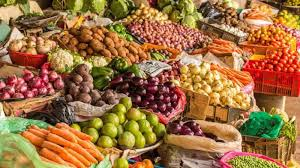

Vegitatble
Exporting fresh food is vital for connecting local producers to global markets. It ensures high-quality products reach consumers while supporting sustainable agricultural practices. This trade not only boosts economies but also promotes food security and enhances culinary diversity worldwide

Fruits
Exporting fresh fruits requires careful handling to preserve quality and freshness. Techniques like refrigeration, controlled atmosphere storage, and proper packaging protect fruits during transit. These methods help maintain flavor, texture, and nutritional value, ensuring that consumers enjoy the best quality produce..